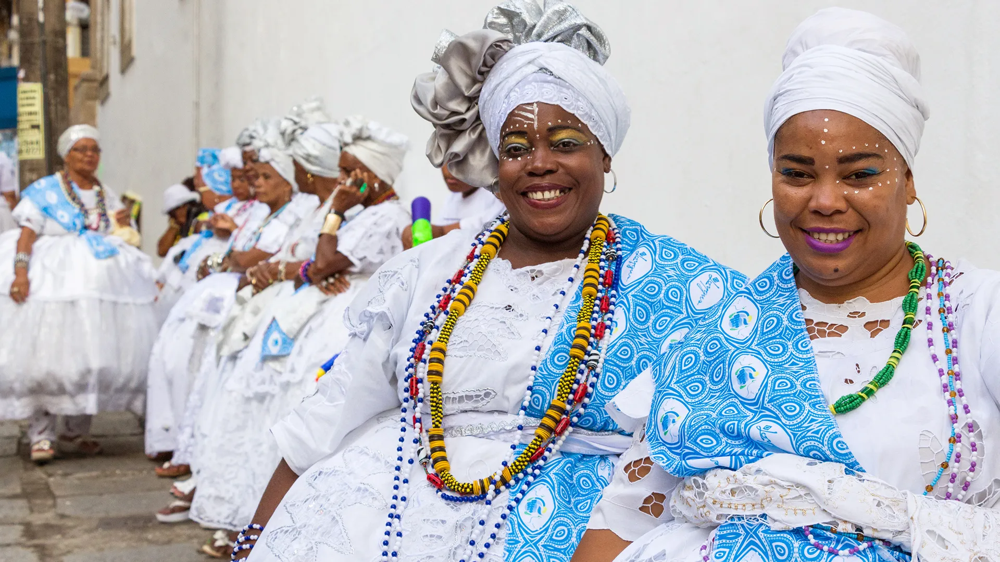
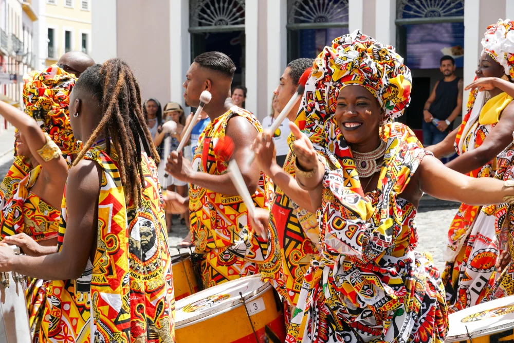
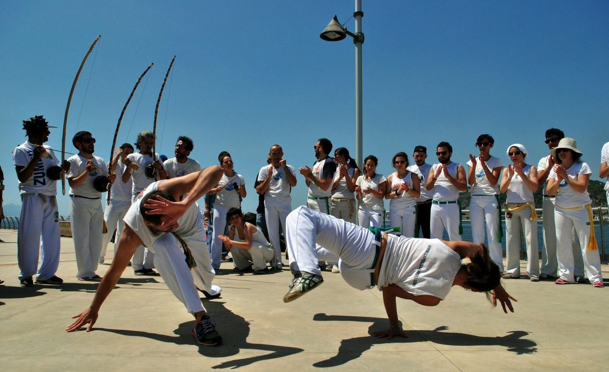

Aspectos Culturais
A Bahia é um verdadeiro celeiro de manifestações culturais, com destaque para sua música, dança e festividades. Alguns dos aspectos culturais mais marcantes incluem:
1. O Candomblé
Uma religião de matriz africana que tem grande influência na Bahia, especialmente em Salvador. O Candomblé celebra a cultura afro-brasileira com danças, músicas e rituais.
2. O Carnaval da Bahia
Um dos maiores e mais animados carnavais do mundo, com blocos de rua, trios elétricos e muita música, principalmente o axé e o samba-reggae.
3. A Capoeira
Uma arte marcial afro-brasileira que mistura dança, música e luta. A capoeira tem raízes profundas na Bahia e é considerada Patrimônio Cultural Imaterial da Humanidade.
